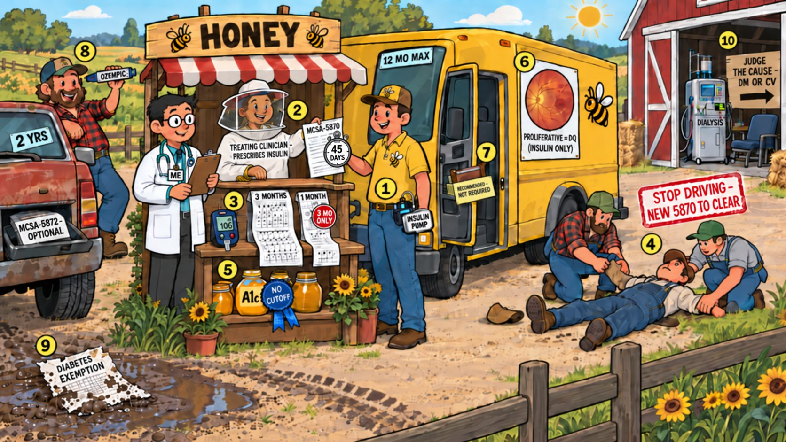

Card 10 of 13 · 49 CFR 391.41(b)(3) · 391.46
The Honey Truck
Diabetes — the insulin-treated standard, MCSA-5870, glucose records, severe hypoglycemia, non-insulin diabetes, dialysis.

0:00 / 0:00
Press play — the narrator walks the scene and the spotlight follows to each numbered object. Click any paragraph to jump there. Space play/pause · ←/→ previous/next object · [/] previous/next card.
What this card covers
Diabetes — the insulin-treated standard, MCSA-5870, glucose records, severe hypoglycemia, non-insulin diabetes, dialysis. Standard: 49 CFR 391.41(b)(3) · 391.46.
The hooks to keep
- Insulin means twelve months max
- 5870 within 45 days
- Three months of records — or only a three-month certificate
- Severe hypoglycemia parks him until a new 5870 clears it
- No A1c cutoff
- Pills get two years and an optional 5872
Test yourself
9 questions on this card
Answer each question to see the explanation, its sources, and the cheat-sheet entry.